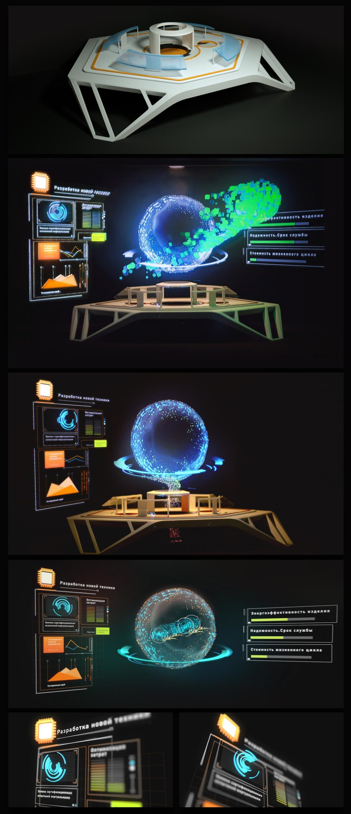
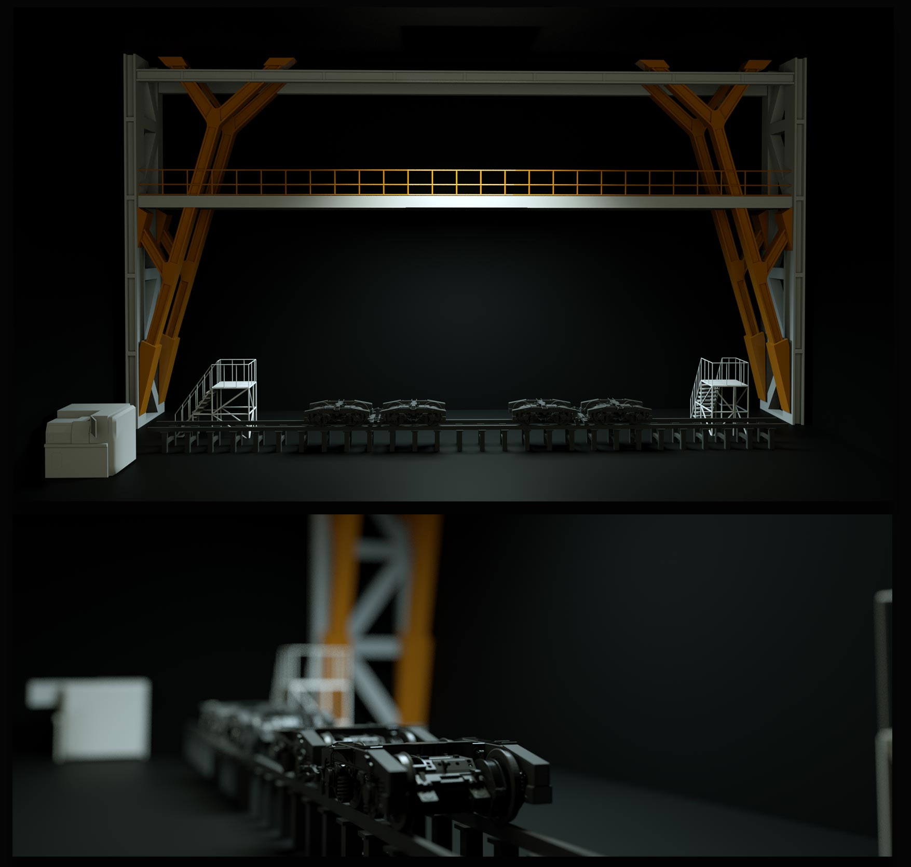
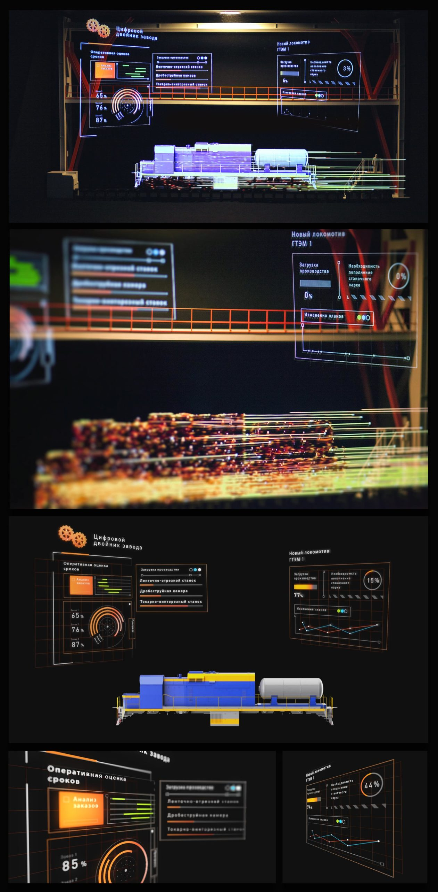
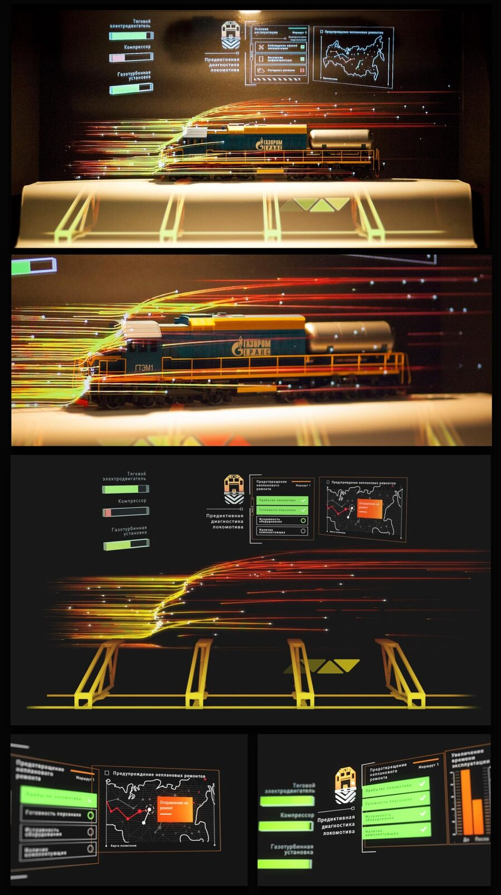

Синара Транспортные Машины
Голографические кубы · машиностроение
Цель проекта
Холдинг «Синара — Транспортные Машины» строит новейшие локомотивы. Показать нужно было не только сами машины, но и современный подход к делу: проектирование, испытания на цифровых двойниках, производство.
Решение
Три голографических куба, связанных в единую линию повествования, проводят зрителя через весь цикл — от конструкторского бюро до цеха и эксплуатации. Новые промышленные процессы требуют новой подачи: голограмма совмещает цифровую графику с реальными макетами, и сложные технологии становятся осязаемыми.
О голограммах
Голограмма — изображение объёмного объекта, в высшей степени похожее на реальный объект. Полноценную проекцию на воздух реализовать пока невозможно: для голограммы нужна поверхность, на которую падает свет. Мы имитируем эффект голограммы внутри замкнутого пространства при помощи системы зеркал — такую установку мы называем голокубом.




Открыть интерактивную версию →